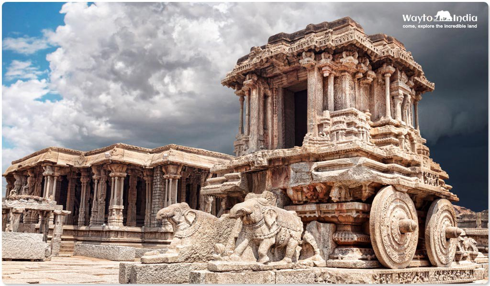
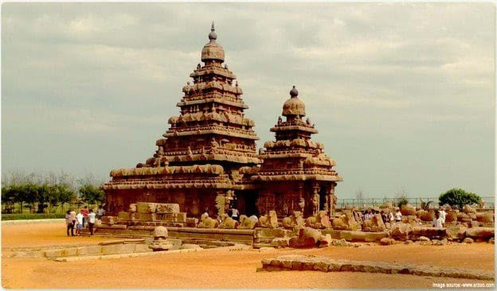

1. HYDERABAD : CHARMINAR

The capital city of Andhra Pradesh, Hyderabad is extremely rich and popular for the historical monuments around the city.
Qutub Shahi dynasty had established the city and Aurangzeb had detained the city in the year 1948. Beautiful mosques, palaces, forts, museums and lakes talk about the beauty and the history of the city.
You will love visiting historical places like Charminar, Faluknuma Palace, Mecca Masjid, Golconda Fort and Hussain Sagar Lake in Hyderabad.
2. HAMPI : EXPLORING THE RUINS OF VIJAYANAGARA

Located in Karnataka, Hampi is a village situated on the banks of river Tungabhadra and used to be the capital of Vijayanagara Empire.
Hampi is fascinating even in its ruined status and draws thousands of visitors throughout the year.UNESCO has named Hampi as a world heritage site, which makes it even more demanding.
Hampi will make you fall in love with its grand view of more than 500 historical monuments.
Lotus Mahal, House of Victory, Vithala Temple Complex, Virupaksha Temple and Mahanavami Dibba are some of the ancient places that further enhance the beauty and culture of the town.
3. MAHABALIPURAM: Dravidian Era

Located at a distance of 55 km. from Chennai, Mahabalipuram has a deep history and mythological significance.
It was a famous seaport during the reign of Peri-plus and Ptolemy and later became a port city for the Pallava dynasty.
Being in the city provides you with an opportunity to study the rich political as well as mythological history of Mahabalipuram.
Do not miss some of the old famous temples containing stunning old Dravidian architecture while in Mahabalipuram.These are Pancha Ratna, Varaha Cave Temple and Shore Temple.
{kind=link}
{kind=link}